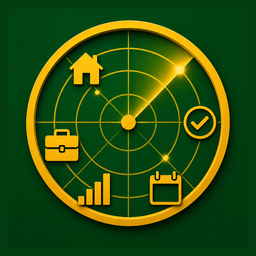
iPhone · iPad · Mac
Pìcciuli
In siciliano, «pìcciuli» sono i soldi: quelli veri, che si contano a fine mese. Pìcciuli tiene sotto controllo spese, entrate e budget, con un radar che ti dice a colpo d'occhio se sei in rotta e dove stai andando.
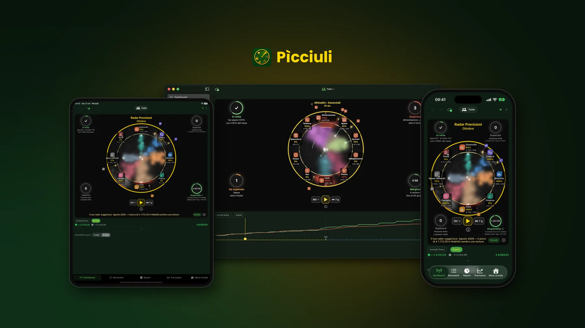
- Niente pubblicitàNessuna profilazione e nessun annuncio, mai.
- Niente bancaI movimenti li inserisci, li importi da CSV o XLSX o li generano le ricorrenze.
- Dati tuoiRestano sul dispositivo e, se vuoi, nel tuo iCloud o nel cloud che scegli.
- CifratiFile dei dati e copie di sicurezza li apre solo Pìcciuli.
Il radar del mese
Dove vanno i tuoi soldi, a colpo d'occhio
Ogni Area di spesa è una nuvola del suo colore. Più la nuvola si allunga, più ti avvicini al limite del mese.
- L'anello dorato è il tetto mensile che hai scelto nel Budget.
- L'arco bianco è il limite con il riporto: il risparmio dei mesi passati ti dà più spazio, uno sforamento te ne toglie.
- Il punto luminoso è quanto hai speso finora; la scia arriva dove sarai a fine mese al ritmo attuale.
- I puntini dorati sono le spese dei prossimi 7 giorni.
- Sotto ogni Area leggi la percentuale del limite già usata e quanto hai speso rispetto al limite.
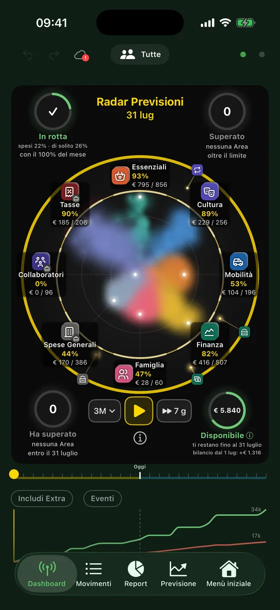
Il cruscotto
Quattro cerchi che rispondono a quattro domande
Rotta
Quanto hai speso dei soldi del mese rispetto ai giorni trascorsi e al tuo solito.
Superato
Le Aree già oltre il limite, e quelle coperte dal risparmio delle altre.
Supererà
Le Aree che sforeranno entro fine mese, al ritmo attuale.
Disponibile
Il saldo previsto a fine mese, comprese le spese con carta non ancora addebitate.
Il bordo del radar cambia colore con il saldo previsto: oro se copre le spese del mese dopo, ambra se è più basso, rosso se va sotto zero.
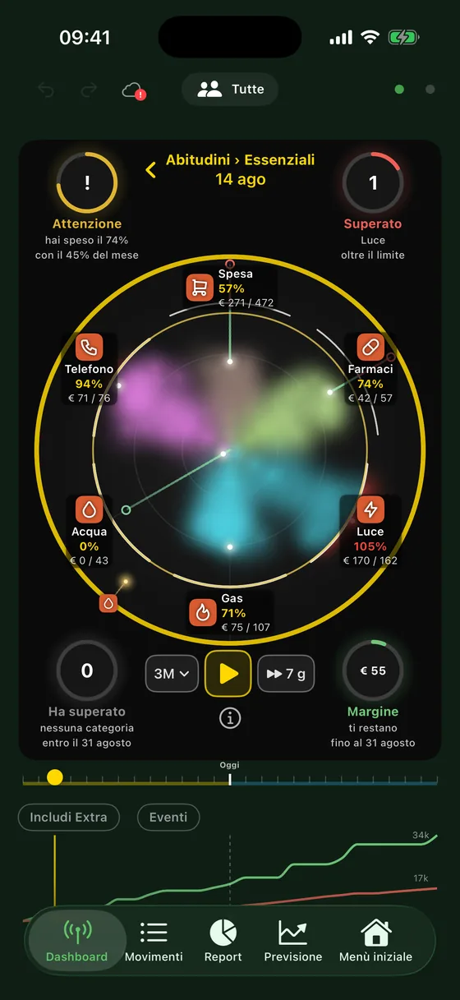
Dentro un'Area
Tocca un'Area e vedi le sue categorie
Lo stesso radar, con una nuvola per ogni categoria dell'Area. Gli stessi quattro cerchi ti dicono cosa sta succedendo dentro l'Area e quanto margine ti resta prima del limite.
Sotto il radar, Pìcciuli ti suggerisce cosa fare: un limite troppo basso rispetto alle tue abitudini, una spesa insolita, un'Area senza tetto.
Nel tempo
Premi Play e guarda scorrere i mesi
Il radar ripercorre il passato, dal mese dei tuoi primi movimenti, e prosegue nei mesi futuri con una stima basata sulle tue abitudini, anche stagionali. Accanto al Play scegli la durata, da un mese a un anno, e il passo: 7, 14 o 30 giorni. Sul Mac basta la barra spaziatrice.
Con Eventi attivo, la simulazione si ferma sui cambiamenti importanti, come un picco isolato o una spesa che sale e resta alta, e alla fine ti mostra il riepilogo.
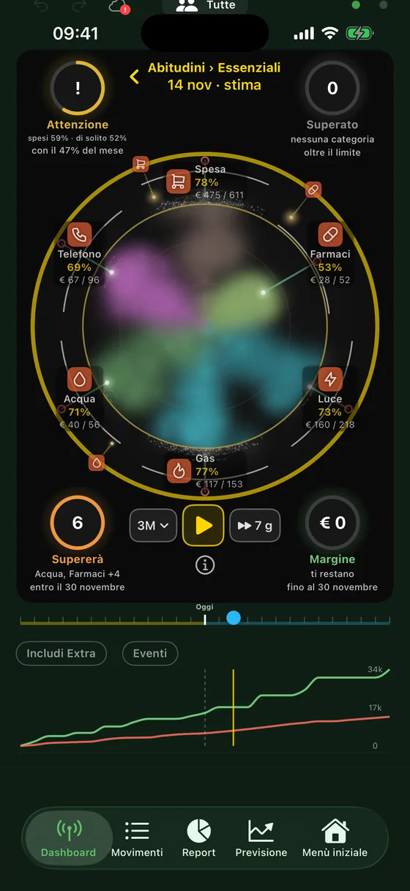
Su Mac
Tutto lo spazio del grande schermo
Su Mac i quattro cerchi stanno agli angoli del radar e il grafico della timeline scorre sotto, sempre in vista.
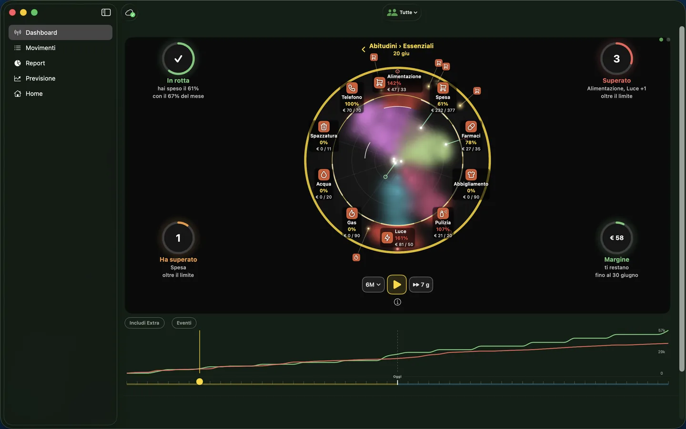
Previsione, Budget e Report
Sai già come finirà il mese, e i prossimi
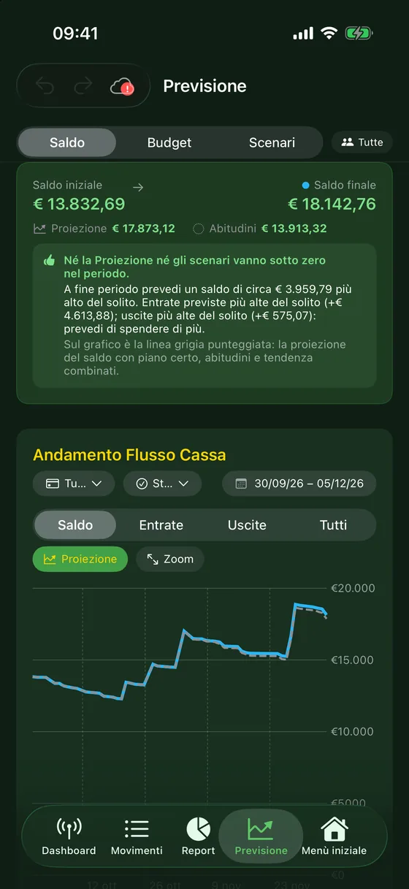
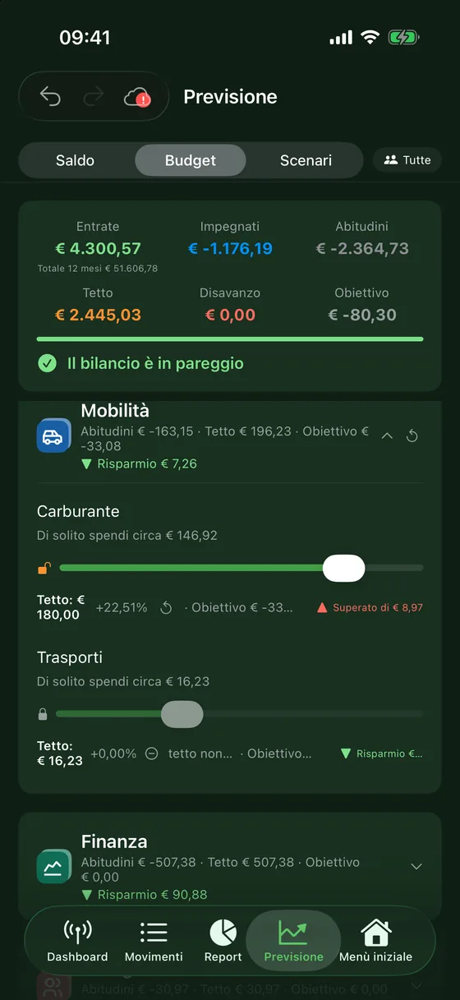
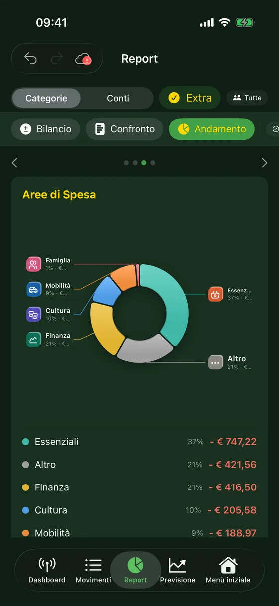
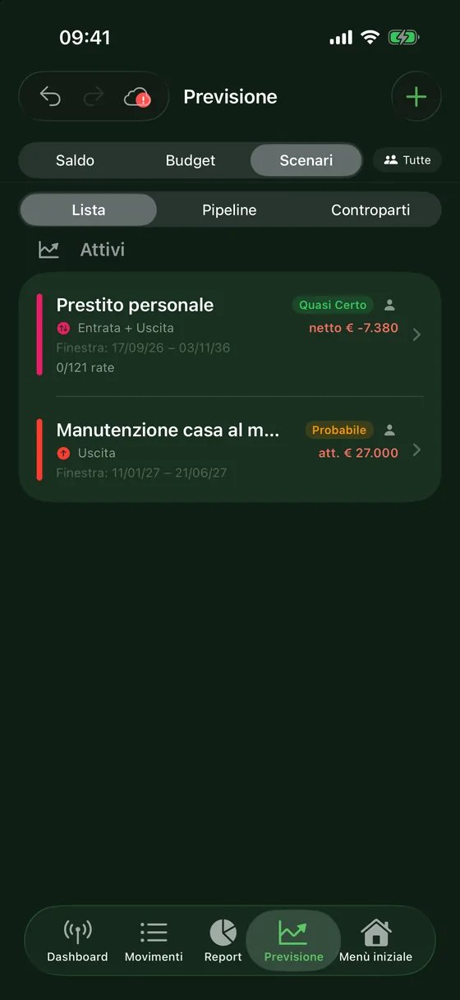
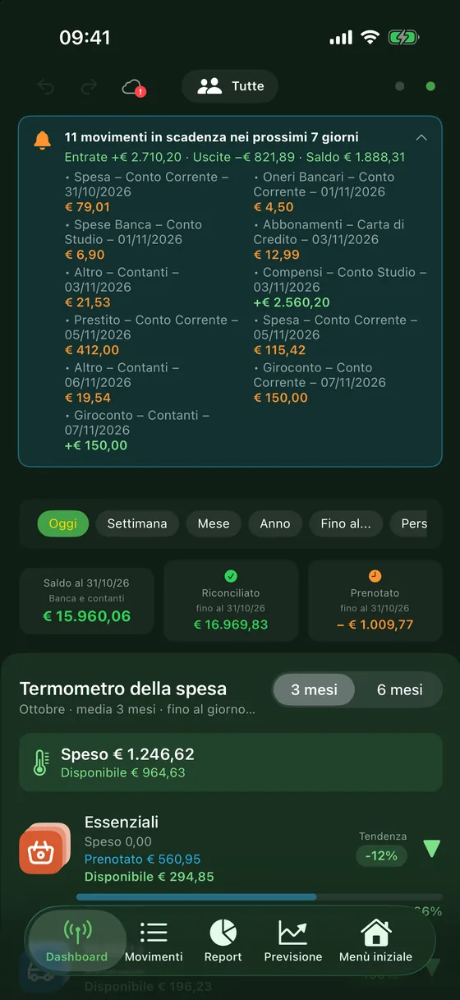
Ogni giorno
Movimenti, scadenze e scontrini
- Conti, contanti e carte di credito in un unico posto, con l'addebito della carta calcolato da solo.
- Movimenti ricorrenti: stipendio, rate, abbonamenti, bollette. Le prossime scadenze compaiono in cima e, se vuoi, nel calendario.
- Scontrini a raffica: fotografane più di uno, Pìcciuli legge importo, data e negozio e te li propone in un elenco da controllare.
- Importazione dei file CSV e XLSX del tuo home banking, con l'avviso dei possibili doppioni.
- Widget con il mese in corso e le prossime scadenze.
Partita IVA
Personale e professionale nella stessa app
Conti, categorie e movimenti possono appartenere alla gestione personale, a quella professionale o a entrambe. Un selettore filtra tutto ciò che vedi.
Sui movimenti professionali indichi aliquota e numero di fattura; il riepilogo mostra l'IVA a debito, quella a credito e la differenza.
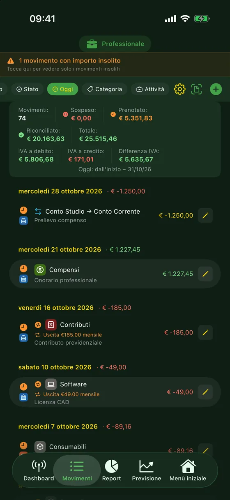
Privacy
I tuoi dati restano tuoi
- Pìcciuli non ha server: lo sviluppatore non vede i tuoi dati e non li riceve in alcuna forma.
- Puoi sincronizzare iPhone, iPad e Mac con il tuo iCloud personale, oppure con un file nel cloud che scegli tu (Google Drive, Dropbox, OneDrive…).
- I file dei dati e le copie di sicurezza sono cifrati sul dispositivo: li apre solo Pìcciuli.
- L'intelligenza artificiale è facoltativa: sui dispositivi compatibili usa Apple Intelligence sul dispositivo; altrimenti la tua chiave Claude o OpenAI, e al fornitore arrivano solo riepiloghi.
Prova senza rischi
Esplora con i dati di esempio
Vuoi vedere il radar pieno prima di inserire i tuoi movimenti? Apri Pìcciuli e scegli Impostazioni → Informazioni → Esplora con dati di esempio, oppure il pulsante nella procedura iniziale. I tuoi dati restano da parte, intatti, e tornano quando esci dall'esempio.
Pìcciuli è gratuita, senza pubblicità e senza abbonamenti. Funziona su iPhone, iPad e Mac; la versione per Android è in preparazione.